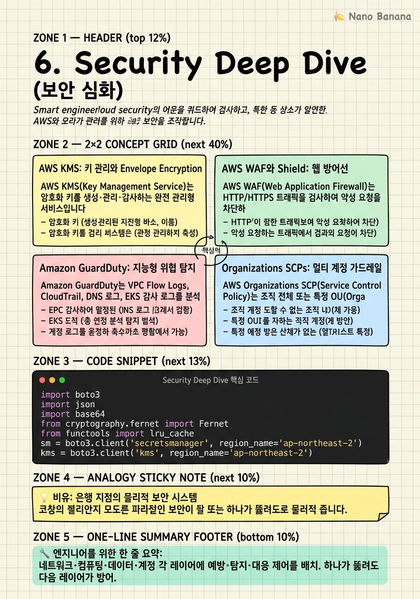

Security Deep Dive

🎯 학습 목표
- KMS CMK로 애플리케이션 데이터를 Envelope Encryption으로 암호화할 수 있다
- WAF 규칙과 Rate Limiting으로 웹 애플리케이션을 보호할 수 있다
- GuardDuty 위협 탐지 결과를 SecurityHub와 EventBridge로 자동 대응할 수 있다
- Organization SCP로 멀티 계정 전체에 가드레일을 적용할 수 있다
- Secrets Manager 시크릿 자동 로테이션 파이프라인을 설계할 수 있다
클라우드 보안은 단일 도구로 완성되지 않습니다. AWS Well-Architected Framework의 보안 기둥은 심층 방어(Defense in Depth)를 요구합니다. 각 레이어(네트워크, 컴퓨팅, 데이터, 계정)에 독립적인 보안 제어를 적용하여, 하나의 계층이 뚫려도 다른 계층이 방어하는 구조입니다.
AWS의 보안 도구는 예방(Prevention), 탐지(Detection), 대응(Response) 세 가지 범주로 나뉩니다. 예방: KMS(암호화), WAF(웹 방화벽), SCPs(권한 가드레일). 탐지: GuardDuty(이상 탐지), SecurityHub(취약점 통합), Config(설정 준수). 대응: EventBridge + Lambda(자동 격리), Systems Manager(패치·복구).
이 챕터에서는 프로덕션 AWS 환경에서 보안 사고를 예방하고 탐지하며 대응하는 전체 체계를 구성하는 방법을 깊이 있게 다룹니다.
핵심 내용
AWS KMS: 키 관리와 Envelope Encryption
AWS KMS(Key Management Service)는 암호화 키를 생성·관리·감사하는 완전 관리형 서비스입니다. 모든 AWS 서비스(S3, EBS, RDS, DynamoDB)의 암호화 기반입니다.
CMK(Customer Master Key) 유형:
- AWS Managed Key: AWS가 자동 생성·관리. 서비스별 기본 키. 사용자가 직접 제어 불가.
- Customer Managed Key(CMK): 사용자가 생성·관리. 키 정책, 자동 로테이션, 감사 가능.
- External Key Material: 하드웨어 보안 모듈(HSM)에서 키를 가져옴. 규제 요구사항.
- Custom Key Store(CloudHSM): AWS CloudHSM의 전용 HSM에 키 저장.
Envelope Encryption은 KMS의 핵심 패턴입니다. 대용량 데이터를 KMS API로 직접 암호화하면 느리고 비용이 많이 듭니다. 대신 KMS가 데이터 암호화 키(DEK)를 생성하면, DEK로 실제 데이터를 로컬에서 암호화하고, KMS CMK로 DEK를 암호화합니다. 암호화된 DEK와 암호화된 데이터를 함께 저장합니다.
키 정책(Key Policy)은 CMK에 대한 접근을 제어하는 리소스 기반 정책입니다. IAM 정책과 함께 사용되며, 키 정책에서 명시적으로 허용해야만 IAM 정책의 Allow가 적용됩니다.
AWS WAF와 Shield: 웹 방어선
AWS WAF(Web Application Firewall)는 HTTP/HTTPS 트래픽을 검사하여 악성 요청을 차단하는 레이어 7 방화벽입니다. CloudFront, ALB, API Gateway, AppSync에 연결합니다.
WAF 규칙 유형:
- AWS Managed Rules: AWS와 파트너가 관리하는 규칙 그룹. OWASP Top 10, IP 평판, SQL 인젝션 방지 - Rate Limiting Rule: 특정 IP/패턴의 요청을 5분 내 N회로 제한. DDoS·크리덴셜 스터핑 방어 - Geo-Restriction: 특정 국가 IP 차단 - Custom Rule: 헤더, URI, 쿼리 파라미터, 바디를 검사하는 커스텀 조건
AWS Shield는 DDoS 공격 방어 서비스입니다. Shield Standard는 모든 AWS 리소스에 무료로 적용됩니다. Shield Advanced는 대용량 DDoS 공격에 대한 실시간 방어, DDoS 비용 보호, AWS DDoS Response Team(DRT) 지원을 제공합니다.
Amazon GuardDuty: 지능형 위협 탐지
Amazon GuardDuty는 VPC Flow Logs, CloudTrail, DNS 로그, EKS 감사 로그를 분석하여 이상 행동을 탐지하는 완전 관리형 위협 탐지 서비스입니다.
탐지 범주:
- 계정 침해: 비정상적 지역의 루트 계정 사용, 크리덴셜 유출 - 인스턴스 침해: EC2가 알려진 C&C(Command & Control) 서버와 통신, 암호화폐 채굴 - 데이터 유출: 대용량 S3 데이터 외부 전송, 비정상적 API 호출 패턴 - Kubernetes 위협: 권한 상승, 익스플로잇 도구 실행
자동 대응 아키텍처: GuardDuty 발견 사항 → EventBridge 규칙 매칭 → Lambda 호출 → 격리(보안 그룹 차단, IAM 자격증명 비활성화, EC2 스냅샷 생성)까지 자동화합니다.
SecurityHub는 GuardDuty, Inspector, Macie, Config, Trusted Advisor의 보안 발견 사항을 단일 대시보드로 통합합니다. CSPM(Cloud Security Posture Management) 역할을 하며, AWS Security Hub Findings를 기반으로 우선순위를 지정합니다.
Organizations SCPs: 멀티 계정 가드레일
AWS Organizations SCP(Service Control Policy)는 조직 전체 또는 특정 OU(Organizational Unit)에 적용되는 최대 권한 경계(Permission Boundary)입니다.
SCP ≠ IAM 정책: SCP는 Allow/Deny를 설정하지만, SCP에서 Allow해도 IAM 정책의 Allow가 없으면 동작하지 않습니다. SCP는 상한선이고 IAM은 실제 부여 정책입니다.
일반적인 SCP 패턴:
- 특정 리전 외 리소스 생성 금지 (aws:RequestedRegion 조건)
- 루트 계정 액세스 금지
- CloudTrail 비활성화 금지 (감사 로그 보호)
- 프리미엄 인스턴스 타입(p4d, hpc6a) 생성 금지 (비용 제어)
- IMDSv2 강제 (메타데이터 서비스 보안)
SCP 상속: OU 트리를 따라 상속됩니다. 부모 OU의 SCP가 자식 계정에 모두 적용됩니다. 빠져나갈 수 없는 가드레일입니다.
자동화: AWS Config Rules와 Systems Manager Automation으로 SCP 위반을 탐지하고 자동 수정합니다.
Secrets Manager와 Parameter Store
AWS Secrets Manager는 데이터베이스 크리덴셜, API 키, OAuth 토큰 같은 시크릿을 안전하게 저장하고 자동으로 교체하는 서비스입니다.
자동 로테이션은 Secrets Manager의 가장 강력한 기능입니다. RDS, Redshift, DocumentDB 시크릿은 자동 로테이션 Lambda가 내장되어 있습니다. 커스텀 시크릿은 자체 Lambda를 작성합니다. 로테이션 시 애플리케이션 재시작 없이 새 크리덴셜을 즉시 사용합니다.
AWS Systems Manager Parameter Store는 계층적 키-값 설정을 저장하는 서비스입니다. 무료 Standard Tier와 유료 Advanced Tier(더 큰 값, 추가 API 처리량)가 있습니다. Secrets Manager와 다르게 자동 로테이션이 없으므로, 민감한 크리덴셜은 Secrets Manager, 비민감 설정은 Parameter Store로 구분하여 비용을 최적화합니다.
절대 하면 안 되는 것: 코드 또는 환경 변수에 크리덴셜 하드코딩. Lambda 함수의 환경 변수에도 직접 저장하지 말고, Secrets Manager ARN만 저장하고 런타임에 조회해야 합니다.
💡 비유로 이해하기
AWS 보안을 은행 지점에 비유해봅시다. KMS는 금고입니다. 금고 열쇠(CMK)는 소수의 관리자만 갖고 있고, 모든 사용 기록이 금고 장부(CloudTrail)에 남습니다. Envelope Encryption은 귀중품을 개별 봉투(DEK)에 넣고, 봉투를 금고에 보관하는 방식입니다.
WAF는 금속 탐지기와 경비원입니다. 방문객(HTTP 요청)을 검사하여 위험 물품(SQL Injection, XSS)을 소지한 사람을 입장 거부합니다. Rate Limiting은 의심스러울 정도로 자주 들어오는 사람을 제한합니다.
GuardDuty는 CCTV 분석 AI입니다. 24시간 모든 활동을 녹화하고, 새벽 3시에 대량 현금을 인출하는 비정상 행동을 탐지하여 경보를 울립니다. SCPs는 지점장도 어길 수 없는 은행 본사 규정입니다. 직급이 아무리 높아도 본사 가이드라인을 벗어나는 거래는 시스템이 자동으로 거부합니다.
💻 코드 예시
Secrets Manager로 RDS 크리덴셜을 조회하고, KMS로 민감 데이터를 Envelope Encryption하는 패턴입니다.
import boto3
import json
import base64
from cryptography.fernet import Fernet
from functools import lru_cache
sm = boto3.client('secretsmanager', region_name='ap-northeast-2')
kms = boto3.client('kms', region_name='ap-northeast-2')
CMK_ARN = 'arn:aws:kms:ap-northeast-2:123456789:key/abcd-1234'
# 1. Secrets Manager에서 DB 크리덴셜 조회 (캐시로 API 호출 최소화)
@lru_cache(maxsize=None)
def get_db_credentials(secret_name: str) -> dict:
"""LRU 캐시로 동일 시크릿 반복 조회를 방지."""
response = sm.get_secret_value(SecretId=secret_name)
return json.loads(response['SecretString'])
def get_db_connection(secret_name: str = 'prod/myapp/rds'):
creds = get_db_credentials(secret_name)
# 크리덴셜로 DB 연결 (실제로는 psycopg2 등 사용)
return {
'host': creds['host'],
'port': creds['port'],
'username': creds['username'],
'password': creds['password'],
'dbname': creds['dbname']
}
# 2. KMS Envelope Encryption 구현
def encrypt_data(plaintext: str) -> dict:
"""Envelope Encryption: KMS가 DEK 생성, DEK로 데이터 암호화."""
# KMS에서 데이터 암호화 키(DEK) 생성
response = kms.generate_data_key(
KeyId=CMK_ARN,
KeySpec='AES_256'
)
plaintext_dek = response['Plaintext'] # 메모리에서만 사용
encrypted_dek = response['CiphertextBlob'] # 저장용
# DEK로 데이터를 로컬에서 암호화 (KMS API 호출 없음)
f = Fernet(base64.urlsafe_b64encode(plaintext_dek[:32]))
encrypted_data = f.encrypt(plaintext.encode())
return {
'encrypted_data': base64.b64encode(encrypted_data).decode(),
'encrypted_dek': base64.b64encode(encrypted_dek).decode()
}
def decrypt_data(encrypted_payload: dict) -> str:
"""KMS로 DEK를 복호화하고, DEK로 데이터 복호화."""
encrypted_dek = base64.b64decode(encrypted_payload['encrypted_dek'])
# KMS로 DEK 복호화 (IAM 권한 + 키 정책 검사)
response = kms.decrypt(CiphertextBlob=encrypted_dek)
plaintext_dek = response['Plaintext']
f = Fernet(base64.urlsafe_b64encode(plaintext_dek[:32]))
encrypted_data = base64.b64decode(encrypted_payload['encrypted_data'])
return f.decrypt(encrypted_data).decode()
# 3. GuardDuty 발견 사항 자동 대응 Lambda Handler
def guardduty_response_handler(event, context):
"""EventBridge를 통해 GuardDuty 위협 발견 시 자동 격리."""
detail = event.get('detail', {})
finding_type = detail.get('type', '')
instance_id = detail.get('resource', {}).get('instanceDetails', {}).get('instanceId')
if 'CryptoCurrency' in finding_type or 'Backdoor' in finding_type:
ec2 = boto3.client('ec2')
# 격리 보안 그룹으로 변경 (모든 인바운드/아웃바운드 차단)
ec2.modify_instance_attribute(
InstanceId=instance_id,
Groups=['sg-ISOLATE-XXXX'] # 격리 전용 SG
)
print(f'ALERT: Instance {instance_id} isolated — {finding_type}')
# 실행 예시
payload = encrypt_data('민감한 고객 개인정보')
print('Encrypted:', payload['encrypted_data'][:50], '...')
print('Decrypted:', decrypt_data(payload))@lru_cache로 Secrets Manager 호출을 캐시하여 Lambda 실행당 API 호출을 최소화합니다. KMS generate_data_key가 평문 DEK와 암호화된 DEK를 동시에 반환합니다. 평문 DEK는 메모리에서만 사용하고, 암호화된 DEK는 데이터와 함께 저장합니다. 복호화 시 KMS의 IAM 권한과 키 정책이 모두 충족되어야 decrypt가 성공합니다. GuardDuty 대응 함수는 EventBridge를 통해 자동 호출됩니다.
🏭 현업에서의 평가
✅ 시니어가 보는 것
- 침해 지표(IoC) 발생 시 감지-격리-복구 자동화 플로우
- 최소 권한 원칙 적용: PoLP(Principle of Least Privilege)
- 크리덴셜 노출 사고 대응 플레이북
- SCP로 특정 서비스/리전 접근 제한 설계
- 공급망 보안: 컨테이너 이미지 서명, SBOM(Software Bill of Materials)
⚠️ 레드 플래그
- 루트 계정에 MFA 없음
- 장기 IAM 액세스 키 사용 — IAM Role + OIDC가 표준
- CloudTrail 비활성화 또는 로그 무결성 검증 없음
- Secrets Manager 없이 환경 변수에 DB 패스워드 저장
- WAF 없는 공용 인터넷 접속 ALB/API Gateway
🎤 예상 인터뷰 질문
- EC2 인스턴스의 IAM Role 크리덴셜이 GitHub에 커밋된 것을 발견했습니다. 지금 당장 무엇을 해야 하나요?
- KMS CMK의 키 로테이션을 활성화하면 기존에 암호화된 데이터를 다시 암호화해야 하나요?
- 멀티 계정 환경에서 특정 팀이 GuardDuty를 비활성화하지 못하게 하는 방법은?
✨ 핵심 요약
심층 방어: 모든 레이어에 독립적 보안
네트워크·컴퓨팅·데이터·계정 각 레이어에 예방·탐지·대응 제어를 배치. 하나가 뚫려도 다음 레이어가 방어.
Envelope Encryption = KMS의 표준 패턴
대용량 데이터를 KMS로 직접 암호화하지 말 것. DEK를 생성하여 로컬 암호화 후 DEK만 KMS로 보호.
WAF Rate Limiting은 DDoS·크리덴셜 스터핑 1차 방어선
IP당 분당 요청 수 제한으로 자동화 공격을 차단. AWS Managed Rules를 기본으로 적용하고 커스텀 규칙 추가.
GuardDuty는 항상 켜두어야 한다
비용 대비 탐지 가치가 높음. 모든 계정에서 활성화하고 SecurityHub로 중앙 집계.
SCPs는 빠져나갈 수 없는 조직 가드레일
루트 계정 사용 금지, CloudTrail 비활성화 금지 등 핵심 보안 정책을 SCP로 강제.
크리덴셜은 Secrets Manager, 설정은 Parameter Store
DB 패스워드·API 키는 Secrets Manager(자동 로테이션). 비민감 설정값은 무료 Parameter Store.
IAM Role + OIDC가 장기 액세스 키를 대체
EC2/ECS/EKS/Lambda는 IAM Role 사용. GitHub Actions는 OIDC 연동으로 액세스 키 없이 AWS 인증.
CloudTrail을 Organization 수준에서 중앙화
모든 계정의 API 호출을 중앙 S3에 수집. S3 MFA Delete와 Object Lock으로 로그 무결성 보장.